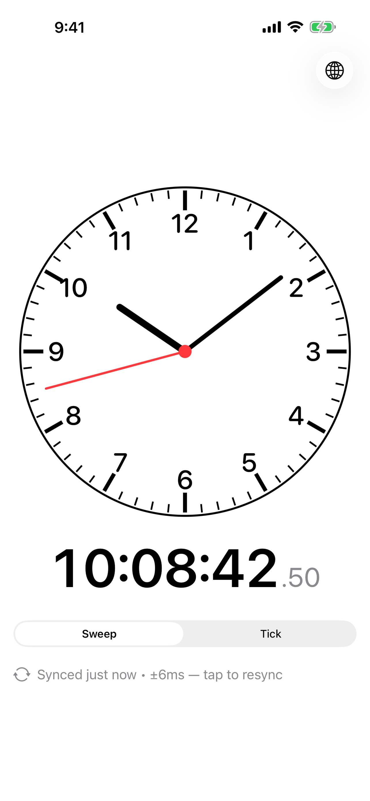
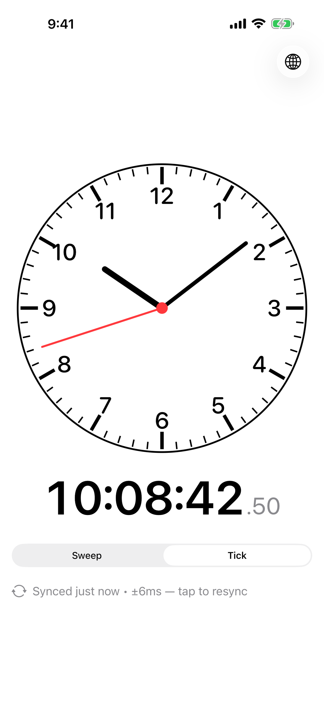
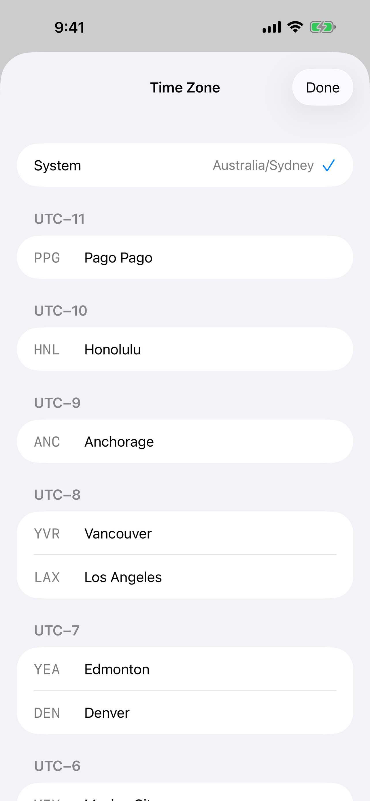
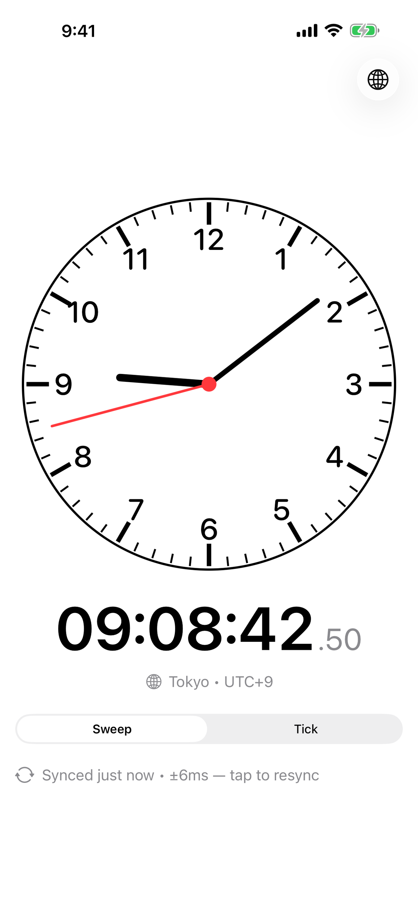

For iPhone & iPad
iOS’s built-in Clock app deliberately hides the second hand.
Accurate Clock fills the gap — a clear analogue dial and a
precise digital readout, SNTP-synced to time.apple.com,
built for setting mechanical watches that hack.
What it does
Pick a smooth sweeping second hand, or a per-second tick. Whatever matches the watch you’re setting.
One round-trip to time.apple.com on launch, with millisecond-level offset shown so you know what you’re looking at.
The exact city set from the Casio AE-1200 World Time module, sectioned by UTC offset.
No accounts, no analytics, no ads, no trackers. The only network call is the time check.
In use

Sweep mode — smooth analogue motion.

Tick mode — one step per second.

Time zone picker — 48 cities, AE-1200 set.

Non-local zones show a chip with the city.
Why this exists
If you’ve ever tried to set a mechanical watch precisely — pull the crown, line up the minute, and release on the second — you’ve probably noticed iOS won’t help. The stock Clock app hides seconds on purpose.
Accurate Clock is the smallest possible app that solves this: a clear analogue face, a digital readout with hundredths, and an honest indication of how far off your device clock is from network time.